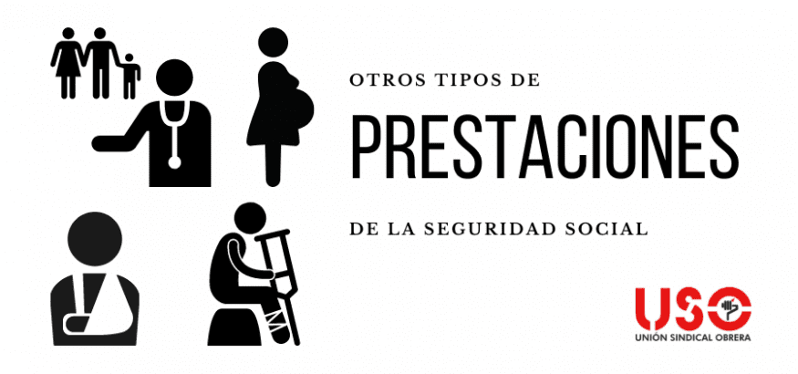

Prestaciones de la Seguridad Social
Las prestaciones de la Seguridad Social pueden ser contributivas (para aquellos que reúnen los requisitos de alta y cotización mínima) o no contributivas (para aquellos que carecen de rentas y no reúnen los requisitos).
Tipos de Prestaciones:
- Prestaciones contributivas: Se otorgan a aquellos que han cotizado el tiempo mínimo exigido y están afiliados a la Seguridad Social.
- Prestaciones no contributivas: Se conceden a personas que no cumplen con los requisitos de cotización pero se encuentran en situación de necesidad económica.

A continuación, se describen las principales prestaciones:
1. Incapacidad Temporal
Situación en la que el trabajador no puede desempeñar su labor temporalmente debido a enfermedad o accidente.
·Tipos de Contingencias
- Contingencias comunes: Enfermedades o accidentes no relacionados con el trabajo.
- Contingencias profesionales: Enfermedades o accidentes derivados de la actividad laboral.
·Requisitos y Duración
- Es necesario estar afiliado y de alta en la Seguridad Social.
- Para enfermedad común, se requiere haber cotizado al menos 180 días en los últimos 5 años.
- Duración máxima: 12 meses, prorrogables hasta 18 meses (en casos excepcionales, hasta 24 meses).
·Cuantía
- Enfermedad común o accidente no laboral: 60% de la base reguladora del 4.º al 20.º día; 75% a partir del 21.º día.
- Accidente de trabajo o enfermedad profesional: 75% desde el día siguiente a la baja.
2. Incapacidad Permanente
Se concede cuando un trabajador no puede volver a desempeñar su trabajo tras haber agotado la incapacidad temporal.
·Tipos
- Parcial: Disminución del rendimiento laboral en al menos un 33%.
- Total: Impide realizar la actividad habitual, pero permite desempeñar otras.
- Absoluta: Inhabilita para cualquier trabajo.
- Gran invalidez: Requiere asistencia de otra persona.
·Cuantía
Depende del grado de incapacidad y de la base reguladora del trabajador.
3. Prestación por Maternidad y Paternidad
Cubre el periodo de descanso por nacimiento, adopción o acogimiento de un menor.
·Duración
16 semanas, ampliables en casos especiales (partos múltiples, discapacidad del menor, etc.). Se puede distribuir entre ambos progenitores.
·Cuantía
100% de la base reguladora.
4. Jubilación
Se otorga a los trabajadores al final de su vida laboral.
·Requisitos
- Tener al menos 15 años cotizados, de los cuales 2 deben estar dentro de los 15 anteriores a la solicitud.
- Edad ordinaria de jubilación según los años cotizados.
·Tipos
- Ordinaria: A la edad legal establecida.
- Anticipada: Puede solicitarse antes si se cumplen ciertos requisitos.
- Parcial: Permite compatibilizar la pensión con un trabajo a tiempo parcial.
- Demorada: Aumenta la pensión por cada año adicional trabajado.
·Cuantía
Depende de la base reguladora y de los años cotizados.
5. Otras Prestaciones
- Viudedad: Para el cónyuge o pareja de hecho en caso de fallecimiento del trabajador.
- Orfandad: Para hijos menores de 21 años o discapacitados.
- Prestaciones por desempleo: Subsidios y ayudas para trabajadores en paro.
Estas prestaciones garantizan la protección social de los trabajadores y sus familias en diversas situaciones de necesidad.